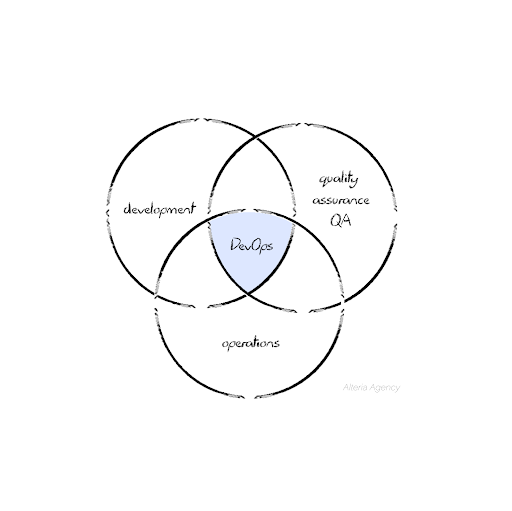
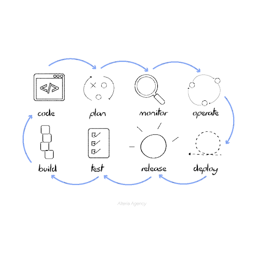

What is DevOps and is it suitable for your project?
May 31, 2022
If you’re new to the tech industry, you might have already heard a bunch of very peculiar words that make you feel dazed and confused after a while.
That's ok, it's perfectly normal because even though technology takes part in the daily life of every human being, the world of technology has many layers and levels of knowledge that are only deeply understood by a tiny group of people (in comparison with the world’s population).
One of those fancy words is “DevOps”. This is a concept that even many people that belong to the tech industry misinterpret, so imagine being someone who wants to hire software services but knows little to nothing about software, and to top it off, words like “DevOps” pop out in the middle of the conversation with your CTO… overwhelming, right?
Well, don’t worry. After reading this article, you'll find out:
- What is DevOps
- Show a few examples of how it’s used in business today
- If it suits your company or not
What is DevOps?
DevOps and other fantastic beasts
DevOps comes from the combination of two words: Dev, for Development, and Ops for Operations.
So, in a very intuitive way, we can say that DevOps is a balance between development and operations, right? Well, not exactly.
In every software project, there are four main areas: development, IT operations, quality engineering, and security. In the past, these areas found it difficult to work together, that’s when DevOps came in.
DevOps is the confluence point where Development and Operations merge to speed up the software/systems development lifecycle and provide continuous delivery of software. Through continuous software delivery, companies can remove clunkiness and improve the overall productivity and quality of their deliverables.
How is DevOps used in software development?
In the software development life cycle, there are always errors or inconsistencies that need to be fixed to deliver a software product that has high quality and compliance.
In 2001, a group of thinkers with a business/software development background wanted to bring a new approach to software project management, and so they gathered to develop a new way of making processes more adaptive and flexible so that sudden changes didn’t have a severe impact on results.
It was then that “Agile Software Development” was born. A philosophy where the main goal is to create software shaped by good practices, with great adaptiveness and responsiveness to change.
DevOps is a philosophy that originated from Agile, which means that it is also focused on making software as adaptive and collaborative as possible to ensure continuous improvement over time.
In the software world, DevOps is used to distribute projects in little pieces so each part of the project can be constantly evaluated and adjusted accordingly to ensure security, quality, and continuous advance. By prioritizing people and interactions, DevOps makes it easier to ensure high-quality results, since there are a lot of people collaborating to make the code better, resulting in a faster code deployment process and cost reduction in the long term.
Now, the million-dollar question: Is DevOps suitable for your project?
The practice of DevOps encourages each company to offer better services each time, in less time, of better quality, and with greater security to its end customers; for example, with more frequent updates, features, or product releases. So, if you hire a software development company that works under a DevOps approach, then you can be sure the results will be faster and of better quality.
Now, its implementation can be expensive. Of course, it will help reduce costs in the long term because it will make processes more efficient, but at first, it’ll involve a generous amount of money to nudge its implementation, so you’ll have to consider this before making a decision.
We hope this article has been helpful and useful.
If you want to know more, don’t forget to check out our other articles on related themes:
- Understanding Agile
- What is a Fractional CTO and why does your business might be needing one